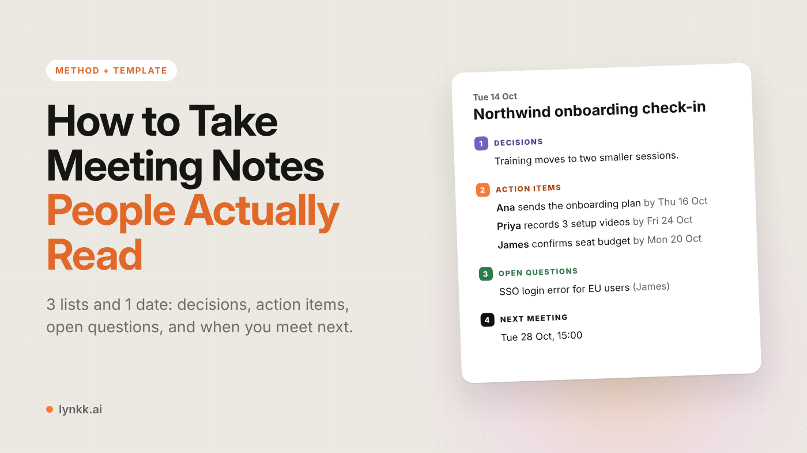
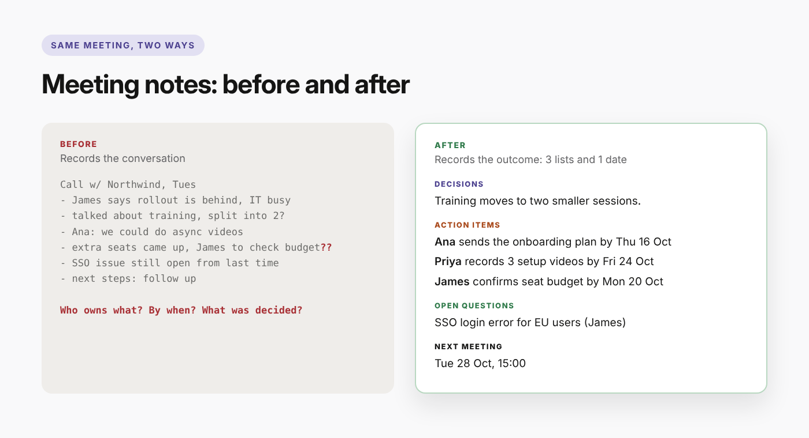

Copy from the next line down and paste into Medium. Upload the two images in Medium at the same spots. Title and subtitle go in Medium's own title fields.

You leave a 45-minute meeting with two pages of notes. A week later someone asks, "Wait, who said they'd send the onboarding plan?" The answer is in your notes somewhere, between a half-sentence about budgets and a quote you wrote down because it sounded important.
That's the problem with how most of us learned to take meeting notes. We record the conversation. What people actually need is the outcome.
The short answer: to take meeting notes people read and act on, write down only three lists and one date: the decisions made, the action items (each with one owner and one due date), the open questions, and when you meet next. Everything else is optional. The rest of this post shows how to do that live, what it looks like before and after, and a template you can copy.
Notes fail in predictable ways:
Fix those four things and your notes become the most useful message anyone gets that week.
Here's how to write meeting notes that people act on: think of them as a short form with four fields. You're not writing an essay; you're filling in boxes.
1. Decisions. What did the group agree on? One sentence each. If you're not sure something was decided, it goes under open questions instead.
2. Action items. Every task gets a verb, one owner and a real date: "Ana sends the revised onboarding plan to James by Thursday." Not "onboarding plan (Ana?)".
3. Open questions. Things raised but not resolved, with the name of whoever raised them. This is the list that stops the same debate from restarting next week.
4. Next meeting date. When will you check on the action items? Write it down so the follow-up actually happens.
That's it. Background, discussion details and context are allowed, but they go below these four things, never above them.
Here's a real-world style example: a 30-minute call with a customer about a delayed onboarding.

Before (how most of us write meeting notes):
Call w/ Northwind, Tues
- James says rollout is behind, IT team busy w/ migration
- talked about training sessions, maybe split into 2 groups?
- Ana: we could do async videos
- pricing for extra seats came up, James to check budget??
- SSO issue still open from last time
- next steps: follow up
After (3 lists and 1 date):
Northwind onboarding check-in, Tue 14 Oct
Attendees: James (Northwind), Ana, Priya
DECISIONS
- Training moves to two smaller sessions instead of one.
- Ana's team will record async videos for the admin setup.
ACTION ITEMS
- Ana sends the revised onboarding plan to James by Thu 16 Oct.
- Priya records the 3 admin setup videos by Fri 24 Oct.
- James confirms budget for 15 extra seats by Mon 20 Oct.
OPEN QUESTIONS
- SSO login error for EU users: still unresolved (raised by James).
NEXT MEETING
Tue 28 Oct, 15:00. Start with the action items above.
Same meeting. Same information. But the second version answers every question anyone will ask about this call in ten seconds, and it reads fine on a phone.
Writing clean notes live is a skill. These habits make it much easier.
Set up the four headings before the meeting starts. Open a doc and type DECISIONS, ACTION ITEMS, OPEN QUESTIONS and NEXT MEETING. Now you're sorting as you listen instead of transcribing.
Listen for decision words. Phrases like "let's go with", "agreed", "so we'll" and "final answer" are your cue to write something under decisions.
Ask the magic question. Whenever a task comes up without an owner or date, ask: "Who's taking that, and by when?" It feels slightly awkward the first time. By the third meeting, people start answering before you ask.
Use shorthand, clean up later. "A → plan → J, Thu" is fine during the call. You'll expand it afterwards.
Don't write down everything. You're not a court stenographer. If a five-minute tangent didn't change anything, it doesn't need to be in the notes.
If you're running the meeting, don't also take the notes. It's very hard to facilitate and capture at the same time. Ask someone else to take notes, rotate the job weekly, or use a tool (more on that below).
The best notes are sent within a few hours, while everyone still remembers the conversation. Here's the routine:
Ten minutes, and nobody has to ask "what did we agree?" again.
Paste this into your notes app, a doc, or the body of an email:
[Meeting name], [Date]
Attendees: [Names]
DECISIONS
- [Decision]
ACTION ITEMS
- [Owner] [verb] [task] by [date]
- [Owner] [verb] [task] by [date]
OPEN QUESTIONS
- [Question] (raised by [Name])
NEXT MEETING
[Date, time]. Start with the action items above.
Notes are informal and written for the team. Meeting minutes are the formal record a board, committee or association approves, often with motions and votes. The method above works for both, but minutes need a few extra fields (chair, apologies, approval of previous minutes). If that's what you need, here's a free meeting minutes template with action items and a filled-in example.
Increasingly, people aren't taking meeting notes by hand at all. AI tools can record the call and draft the notes, which frees you to actually take part in the conversation.
It works well when the tool follows the same structure as this post: decisions, action items with owners and dates, open questions. It works badly when it produces a long narrative summary that nobody reads, which is exactly the problem we started with.
Two ways to try it:
Either way, read the notes before you send them. AI is fast, but you're still the one who knows what the meeting was actually about.
What is the best way to take meeting notes? Prepare four headings (decisions, action items, open questions, next meeting) before the meeting, fill them in live, and send the cleaned-up notes within a few hours.
What should meeting notes include? At minimum: date, attendees, decisions, action items with owners and due dates, open questions, and the next meeting date.
How do you write meeting notes quickly? Use shorthand during the meeting, skip anything that didn't change an outcome, and spend ten minutes cleaning up right after the call.
If this was useful, follow for more practical posts on running better meetings. What's the worst meeting note you've ever received? Tell me in the responses.